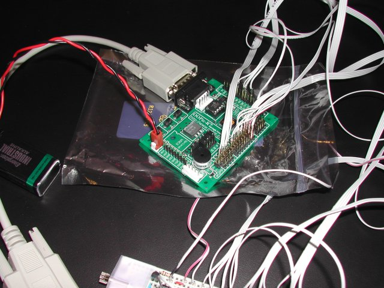
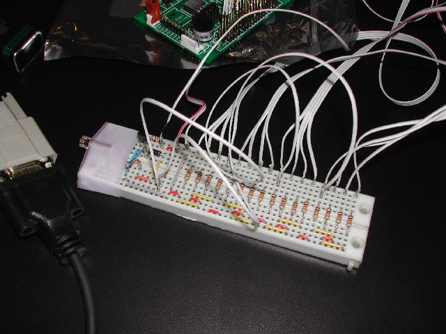
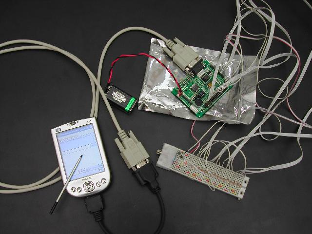

Adding interface to
I
mmersive Environment with
PDA
host
Adding switches, haptic devices and key input function by using PDA host
This page covers my tinkertronics-ing(sp?) project with PDA for immersive environment [and optionally as usual: to make fun of me]. For more detail of system integration for ACES visualization Lab, please refer to:
System Integration for Immersive Environment.
Similarly, for immersive environment users guide at ACES visualization lab, please refer to:
Users guide to immersive environment at ACES Visualization Lab
I am actually slightly feeling guilty having fun on my project while I am getting paid. This must be "the guilt feeling at work" people talk about all the time.
Creating devices to host more functionalities to Immersive Environment:
The immersive environment system at TEXAS Advanced Computing Center(TACC) consists of 11 projector screens to cover almost 360 degrees of view, driven by 3rdTech's hiBall tracking system with 2 trackers for head and wand (wand is a handheld pointing device), VRCO's CAVElib, and several different platforms of visualization rendering nodes. Since I am responsible to anything for immersive environment at TACC, I had enough time spent to think what kind of things are useful for the navigation of immersive environment. When ideas came out, I realized I almost needed a PC strapped on me. This is how I started PDA hosting for immersive environment.
PDA immersive hosting is my attempt to make navigation of immersive environment easier to get around by offering aiding device to us who are handycapped to incomplete (virtual) reality. This is still very very prototype and on-going project, and there is no end. The immersive hosting has ability to control switch, motors, lamp, relay etc that can communicate to visualization node. The base system is a PDA that works as a communication node to visualization machine, and an integrated programmable circuit board to host additional circuits. Later section will touch on more details. This is a story of days that prototyping board was my best friend.
Immersive environment is still very developping field. It is still very far away from giving us "natural" feel of navigation. Simply, it do not give a feel we are seeing data object in real space even wearing stereo glass, nor touching data object while 3-D cursor is intersecting with a data object.
immersive environment is not simply a progression or a regression from our traditional 2-D desktop screen, but a trade off. A strength of immersive environment is ability to explore data by its nature due to the gained degrees of freedom. For this reason, most of useful immersive environment applications are viewers of some sort. But this can be also a weakness because of incomplete physics that our sense has not yet learned well as much as we did to 2-D desktop space. Now days, most of us have no problem pointing our cursor at an icon. In immersive environment, it can be a difficult task due to incomplete physics. Without a stereo glass, we have no clue to depth except by size and perspective if we know the size of object and the object has a shape that we know the perspective of. Even stereo glass is not a real solution. Let's say, while a data object is projected at 1 meter away from your eyes, rendered image is still casted onto the screen 3 meters away from you. Even your eyes are trying to focus on the data object a meter away, eyes are physically still focusing onto the screen 3 meters away. This is why we have better result when physical distance and data distance are similar. Stereo view is only valid on relative relationship of data object to data object, but not with real physical space. That is why we have a 3-D cursor as a reference to the data space. To effectively create immersive environment space, I believe we need to know which concept we already have can be appropriate, and what newer non-physical concepts are appropriate. While something like hyper dimemsion can be one of those pro-concepts, interaction with precision can be one of those con-concepts. A rumor says: Zatoichi, a blind swordsman, says: "blind men can hear better than open-eyed men." Really?? \(?_?)/ We need additional clue to assist our incomplete sense of optics or additional aiding method to achieve necessary functions. Okay, I am rationalizing myself -to say, "Let's make more useful additional interface!"
What was attempted
16 additional buttons: Most of wands already have 3 buttons. It seems to be enough for most of current applications. Will it be still enough when the navigation of applications get more complicated/sophisticated? Can we always depend on floating menus when view is filled with data? We all know aiming at floating menus without stereo glass can be sometimes difficult. Maybe, we can have few macro buttons? Can we have switch for each fingers to simulate grabbing data objects?
haptic feedback: Without stereo view, how much can you determine depth? Maybe, I can have another clue how close my wand is to an object?
alphanumeric keybad: What if I want to type alphanumeric charactors? Do I have to walk back to workstation to type? Maybe, giving a name to my newly created data object? There are 2 ways I took for giving keyboard to immersive environment. One of them became a separate project to create VRCO CAVElib specific API that enables floating keyboard, "CAVoard" a CAVE keyboard.
and an idea for later project ...
PDA as a navigation control: How about using a PDA to navigate immersive environment space? This is especially an interesting thing when the driver to the immersive environment is not in the same physical space. This is actually a part of an remote visualization idea I would like to try later so I am forwarding this idea to later time.
VoIP: When PDA is used to remotely navigate a collaborative immersive environment, do they talk on phone? I will not be greedy to have a good quality VoIP, but can I at least send recorded voice file to collaborators?
Host PDA
Immersive Hosting uses Pocket PC as its host. When I started, I looked around choices for the host PDA. Assuming it has minimal processor power, the category I used was screen size, battery life, support for software development, support to hardware, etc. My choices were Zaurus driven by linux (QT support, yey!), Palm OS and Pocket PC. Since Zaurus is a linux, I initially leaned towards it due to the support to certain APIs. I ended up setting with Pocket PC. Zaurus was unfortunately dying race, and I expected it will became more and more difficult to get needed hardware parts. Also, Pocket PC turned out to have a very good support for software development from MicroSoft. Later, this proved to be a good choice.
Interface to add electronics parts
Programmable Integrated Circuit (PIC) is attached to the PDA to controls added electronics. PIC was developed to control robot. PIC offers connection pin outs to control servo motors, buzzer and serial communication. It can be easily powered by a 9 volts battery.

( This particular PIC board is called OOPIC. Serial connection will go to PDA's docking port. )

( Prototyping board: A micro motor is taped onto the left hand side edge of the board. You do not see actual switches here since I was just poking wires to holes to close circuits. There are 16 resisters right next to holes for 16 switches. 2 wires between resisters and wires are closed circuit -switches ON. )
Functions and its communication network
There are a lot of possibilities with PIC, but I am initially focusing on adding 3 functions to immersive environment, more switches, haptic feedback, and keyboard. By thinking about a possibility that signal from PDA host is fetched by multiple nodes, I decided to have a signal server. Due to the fact this is used in immersive environment with our head tracker, I decided to host signal serving daemon on hiBall server node. Communication between between each components and visualization node was passed as ruled strings. Protocol is not exactly set since this was yet only a prototyping, so ruled string was good enough for now. Each components are connected as follows.
switches: New switches are wired to PIC via prototyping board. The PIC polls on the change of states on connection pins for switches. Changes will be signaled to PDA host.
haptic feedback: The signal sent from visualization node are transmitted the PIC via the PDA host over network, which powers a micro motor. This type of motor is commonly used for cell phone etc.
keyboard: As a part of OS, Pocket PC has a graphical keyboard user interface that users type onto the PDA screen with a stylus. It will suffice to only write a GUI for input.
communication software + device daemon: The last piece is a PDA hosting software that has a GUI for string input and takes care of serial device communication to PIC board. As a being just a prototype, all the communication to hiBall server is made as a ruled string. The communication software on PDA host was written with embedded C++ from MicroSoft. I found an example of telnet source code for Pocket PC, which helped me a lot since I was new to Windows CE programming. Also, a book from MicroSoft Press explained serial communication surprisingly well. The PIC board came with its own programming kit. I have tried few basic rules to program for switches, buzzer, pulsing the micro motor. Worked well.
This is what communication network looks like.
16 * switches
|
| micro (haptic) motor
| |
----------------------------
| / *prototyping board
| /
| /
----------------------------
| / *PIC board
|---
|
----------------------------
|
| *serial cable
|
----------------------------
| *PDA host
| keyboard GUI
| /
communication app
|
----------------------------
|
| *Network
|
----------------------------
| *hiBall System (Tracking Signal Server)
signal passing daemon
|
----------------------------
|
| *Network
|
----------------------------
| *visualization node
test application
Which actually looks like this:

A while set: GUI on PDA screen shows received message field, message input field along "send", "connect", "disconnect" and "exit" buttons.
It is workin!
Even it still lacks flexibility on its operation due to the fact this is the first trial of prototyping. I now know it is feasible. I could send send signal for 16 keys (simultaneous circuit closure in any combination), sound a buzzer, pulsing the micro motor in different rate, and sending text message back and forth by using Windows CE's alphanumeric input GUI. As wifi signal quality was very poor in our visualization lab, it really needs a good data verification. Due to my work priorities, I had to pause on this project a while. I am hoping to get back to this soon.
By looking at picture above, I really need to make housings for them so I can mount on the wand. I am hoping to use 3-D printer in some department. If you have one, and willing to let me print a wand, please please let me know.
As mentioned earlier, another CAVElib specific keyboard input method is work in progress. Please refer to "CAVoard" a CAVE keyboard.
makoto@tacc.utexas.edu
ACES 2.340
(512)475-6954
TEXAS Advanced Computing Center
Visualization and Data Analysis Group
updated: March 11th 2006